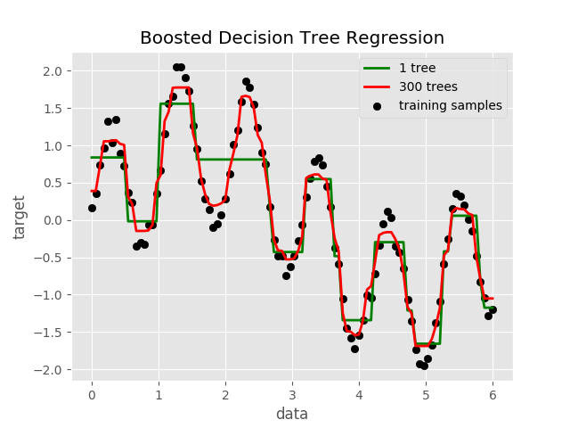

Regression with NumPy and TMVA¶
{kind=link}
Python source code: plot_regression.py
import numpy as np
import matplotlib.pyplot as plt
from root_numpy.tmva import add_regression_events, evaluate_reader
from root_numpy import ROOT_VERSION
from ROOT import TMVA, TFile, TCut
from array import array
plt.style.use('ggplot')
RNG = np.random.RandomState(1)
# Create an example regression dataset
X = np.linspace(0, 6, 100)[:, np.newaxis]
y = np.sin(X).ravel() + \
np.sin(6 * X).ravel() + \
RNG.normal(0, 0.1, X.shape[0])
# Fit a regression model
output = TFile('tmva_output.root', 'recreate')
factory = TMVA.Factory('regressor', output,
'AnalysisType=Regression:'
'!V:Silent:!DrawProgressBar')
if ROOT_VERSION >= '6.07/04':
data = TMVA.DataLoader('.')
else:
data = factory
data.AddVariable('x', 'F')
data.AddTarget('y', 'F')
add_regression_events(data, X, y)
add_regression_events(data, X, y, test=True)
# The following line is necessary if events have been added individually:
data.PrepareTrainingAndTestTree(TCut('1'), '')
if ROOT_VERSION >= '6.07/04':
BookMethod = factory.BookMethod
else:
BookMethod = TMVA.Factory.BookMethod
BookMethod(data, 'BDT', 'BDT1',
'nCuts=20:NTrees=1:MaxDepth=4:BoostType=AdaBoostR2:'
'SeparationType=RegressionVariance')
BookMethod(data, 'BDT', 'BDT2',
'nCuts=20:NTrees=300:MaxDepth=4:BoostType=AdaBoostR2:'
'SeparationType=RegressionVariance')
factory.TrainAllMethods()
# Predict the regression target
reader = TMVA.Reader()
reader.AddVariable('x', array('f', [0.]))
reader.BookMVA('BDT1', 'weights/regressor_BDT1.weights.xml')
reader.BookMVA('BDT2', 'weights/regressor_BDT2.weights.xml')
y_1 = evaluate_reader(reader, 'BDT1', X)
y_2 = evaluate_reader(reader, 'BDT2', X)
# Plot the results
fig = plt.figure()
fig.patch.set_alpha(0)
plt.scatter(X, y, c="k", label="training samples")
plt.plot(X, y_1, c="g", label="1 tree", linewidth=2)
plt.plot(X, y_2, c="r", label="300 trees", linewidth=2)
plt.xlabel("data")
plt.ylabel("target")
plt.title("Boosted Decision Tree Regression")
plt.legend()
plt.show()
Total running time of the example: 1.24 seconds